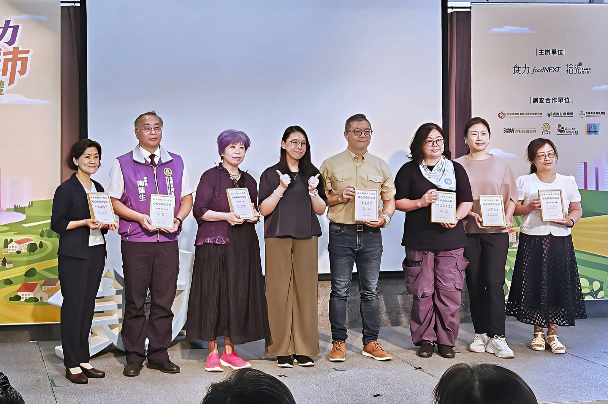

新學年22縣市免費營養午餐上路 國教盟：免費不能變「便宜午餐」
籲啟動開學100日檢核，公開成本、菜單、食安與人力改善各縣市補助、供餐與人力配套不一 籲開學100日公布成本、菜單、食安及改善結果
下週一8月31日是115學年度開學日，全台22縣市的國中小營養午餐同步走入「政府買單」時代（適用學校、對象與補助內容各地不一，以各地方政府公告為準）。這是台灣學校午餐制度性的轉折點：過去家長付錢，午餐出問題，家長是向廠商與學校究責的消費者；現在政府接手付錢，課責的對象就是政府自己。免費上路的第一個學期，社會要問的不再是「哪個縣市免費」，而是——免費之後，品質會不會變差？
開學前夕的警訊：媒體報導部分縣市的定額補助低於部分學校原有供餐費用，基層學校親師生普遍擔心菜色或附餐調整；每餐補助基準各地從50多元到90多元不等。而中央每餐10元的「三章一Q」國產可溯源食材補助，自115年起依財劃法回歸地方負擔——全國約38億元從專款變成統籌財源，這筆錢還在不在食材上，是本學期最需要攤開的一筆帳。7月的油品事件則提醒所有人：追溯系統派得上用場、備援機制缺一不可（教育部曾以校園食材登錄平臺一次比對出20縣市、623所學校與258所幼兒園受影響；台中駁回業者復工並啟動校園用油專案稽查、彰化開學前試煮、苗栗強化食材抽驗溯源、北市加密查核場次，出處見文末）。
國教行動聯盟理事長王瀚陽表示：免費只改變誰付錢，不會讓食材、廚工、能源、運輸與食安管理成本消失。若補助低於實際成本，差額一定有人吸收；最不能接受的，就是最後由孩子的餐盤，以肉量減少、配菜降規、國產可溯源食材縮減或附餐取消來吸收。

國教盟樂見減輕家庭負擔的政策方向，但強調「免費不等於制度零缺失」。各縣市補助金額未必包含相同項目，不能直接拿來排名，也不能只憑單一數字判定品質——各縣市政府應採一致口徑，把每餐總成本與品質指標攤在陽光下，而不是只宣傳「免費」或補助金額。
面對開學，國教盟對營養午餐提出四項要求
面對開學，國教盟對營養午餐提出四項要求
各縣市應於開學首週公布每生每餐補助總額、前一學年度實際餐費或成本、食材費占比，以及人事、設備、能源、運輸與食安管理支出；自設廚房、中央廚房、他校供餐及外訂團膳應分別揭露。若補助不足，必須說清楚差額是由政府、學校、廠商或家長何者負擔。
主要蛋白質份量、國產可溯源食材比例、水果與乳品供應頻率，不應因定額補助而降低；承前述三章一Q補助回歸地方之變動，各縣市應公開可溯源食材比例，證明這筆錢仍用在食材上。各地應公布新舊菜單及供餐規格；如需調整，應提出成本依據與替代方案。中央應訂定食安、營養、追溯、過敏照顧及資訊公開的最低共同標準，地方可以加碼，但不能低於底線。
免費政策增加採購、核銷、驗收、食材登錄、通報及家長溝通工作，營養師、廚務人員、午餐行政與隨班指導人力都應同步盤點；教師或行政人員若承擔額外工作，應明定工時、責任及相應支持。七月油品事件已顯示，單一供應源出問題時，備援與快速換源機制缺一不可；地方應就招標流標、油品與食材供應異常建立備援，不能把上游檢驗責任轉嫁給學校。
各縣市應自開學日起100日內，公布適用學校與學生範圍，包括實驗教育學生的處理原則，以及實際成本、菜單變動、招標履約、人力配置、抽驗結果、異常事件、剩食與親師生反映；教育部應於學期結束前，以一致欄位完成全國彙整。
立法院已完成《學校午餐及飲食教育條例》草案初審，但中央與地方經費分擔、營養師及午餐執行人力等關鍵條文仍待協商。國教盟呼籲行政院、教育部及立法院儘速補上財源、人力與監督機制；地方政府則不必等專法完成，現在就能公開既有的成本、抽驗與改善資料。
「開學100日檢核」不是比較哪個縣市花得最多，而是確認午餐免費是否影響孩子餐盤上的品質。免費營養午餐不能降低用餐品質，更不能讓孩子、學校或第一線人員替政策缺口埋單。
新聞聯絡人
- 國教行動聯盟理事長 王瀚陽 電話 0983-097-165
參考資料｜供媒體查證
- 教育部國教署新聞稿（115-07-08）：運用校園食材登錄平臺比對，疑似使用受影響產品範圍計20個縣市、623所學校及258所幼兒園（行政院全球資訊網轉載）。
- 中央社（2026-07-27）：立法院教育及文化委員會初審學校午餐及飲食教育條例草案，經費分攤、營養師人數、執行秘書及諮詢輔導機制等條文保留協商。
- 中國時報（2026-08-26）：各縣市每餐補助基準報導（台北92元、部分縣市50多元）。
- 聯合報（2026-08-27）：部分縣市補助低於原供餐費用、實驗教育學生補助銜接、導師用餐補助各縣市不一等報導。
- 公共電視（2026-04）：全台22縣市皆已確定自新學年度起推行免費營養午餐。
- 台中市政府（2026-08-06）：駁回中聯油脂復工申請；另啟動校園用油專案稽查（台中市府官網／中央社）。
- 中央社、自由時報（2026-08-24）：彰化縣長視察中央廚房開學前試煮。
- 自由時報（2026-08-18）：苗栗縣強化學校午餐食材抽驗與溯源稽查。
- 中央社、自由時報（2026-08-06）：臺北市學校午餐查核由每年1次增至約150場，開學前另辦油品專案查驗15場。
- 教育部說明：三章一Q每餐10元補助自115年度依財政收支劃分法修正回歸地方政府負擔（非取消或刪除）；相關經費約38億元併入統籌分配款。
本頁為 2026 年 8 月 28 日對外發布新聞稿之官網存查版，內容與發布版一致、逐字照登、未經改寫。媒體採訪請聯繫上方新聞聯絡人。